피아노조율기능사 (2012-02-12 기출문제)
1과목: 임의 구분
1. 피아노선 번호와 그 굵기(mm)를 가장 옳게 나타낸 것은?
- 13번: 0.825mm
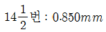
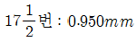
- 19번: 1.000mm
(정답률: 63%)

2. 향봉에 관한 설명으로 옳은 것은?
- 향판의 음향 전달에는 별 영향을 주지 못한다.
- 재질은 나도박, 단풍나무가 좋다.
- 향판의 크라운을 보강한다.
- 두께는 10~12mm정도가 좋다.
(정답률: 65%)
3. 다음 그림은 피아노 댐퍼의 일부분을 나타낸 것이다. B에 해당되는 명칭은?
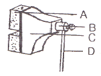
- 댐퍼우드
- 댐퍼언더펠트
- 댐퍼블록
- 댐퍼레버
(정답률: 47%)
4. 피아노 발달사에 관한 내용으로 다음 중 연대가 가장 빠른 것은?
- 브로드우드, 6옥타브 피아노 제작
- 와이어를 만드는 다이어몬드 다이스 출현
- 토마스라우드, 교차식 현의 특허
- 브로드우드, 스퀘어 그랜드 피아노 완성
(정답률: 47%)
5. 피아노선을 인장시험 할 때 선지름이 1.00mm이상인 선은 물림 간격을 약 몇 mm로 하여야 하는가?
- 100
- 200
- 300
- 400
(정답률: 63%)
6. 피아노 외장의 도장 방식으로 가장 거리가 먼 것은?
- 붓 도장
- 스프레이 도장
- 플로우코터 도장
- 전착 도장
(정답률: 40%)
7. 피아노의 페달은 연주에 지장이 없도록 간격을 유지해야 하는데, 일반적으로 바닥면에서 페달 앞 끝 윗면ᄁᆞ지의 높이는 어느 정도이어야 하는가?
- 22~40mm
- 45~75mm
- 85~95mm
- 1⑤~125mm
(정답률: 75%)
8. 건반의 높이와 깊이가 정상이고 타현거리가 좁아지면 어떤 현상이 주로 발생하는가?
- 해머스톱이 멀어진다.
- 이중 타현이 된다.
- 렛-오프가 적게 나온다.
- 에프터 터치가 많아진다.
(정답률: 47%)
9. 다음 ( )안에 들어 갈 알맞은 용어는?
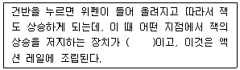
- 레피티션(Repetition)
- 잭 버튼(Jack Button)
- 레귤레이팅 버튼(Regulating button)
- 스톱 레일(Stop Rail)
(정답률: 40%)
10. 현의 진동을 향판에 전달하는 교량 역할을 하는 부분은?
- 히치핀(hitch pin)
- 브리지(bridge)
- 페달(pedal)
- 튜닝 핀판(tuning pin block)
(정답률: 75%)
11. 각 음정의배음에 관한 설명 중 틀린 것은?
- 완전 5도는 아래음의 3배음과 윗음의 2배음이 서로 부합한다.
- 장3도는 아래음의 5배음과 윗음의 4배음이 서로 부합한다.
- 장6도는 아래음의 3배음과 윗음의 5배음이 서로 부합한다.
- 단3도는 아래음의 6배음과 윗음의 5배음이 서로 부합한다.
(정답률: 50%)
12. 사람 귀의 구조 중 마이크로폰의 진동판과 같은 역할을 하며 음파를 기계적인 진동으로 바꾸어 주는 기능을 하는 것은?
- 세반고리관
- 청소골
- 고막
- 달팽이관
(정답률: 50%)
13. 다장조에서 주요 3화음을 구성하는 음이름이 아닌 것은?
- 도, 미, 솔
- 미, 솔, 시
- 파, 라, 도
- 솔, 시, 레
(정답률: 79%)
14. 피아노의 배음에서 인하모니시티에 대하여 가장 적합하게 설명한 것은?
- A49번으로부터 저음은 점점 낮아지고, 고음은 점점 높아지는 것을 말한다.
- 조율곡선에서 기음의 진동수가 일치하는 것을 말한다.
- 배음의 실제 진동수가 기음의 점수배로 되는 것을 말한다.
- 실제 배음의 진동수가 기음으로부터 정확히 정수배가 되지 않고 조금씩 오차를 보이며 하모닉스한 진동수를 벗어나는 것을 말한다.
(정답률: 57%)
15. 건반 A49의 진동수가 440Hz일 경우 fA45의 진동수는 몇 Hz인가?
- 329.6275Hz
- 349.2282Hz
- 369.9944Hz
- 391.9954Hz
(정답률: 59%)
16. 음정의 이름은 다르지만 장3도와 같은 화음의 넓이를 가진 음정은?
- 감5도
- 감4도
- 증5도
- 증4도
(정답률: 58%)
17. C28에서 위로 장3도 E32의 진동에서 맥놀이수(b/s)는 얼마인가? (단, C28의 진동수는 130.813Hz, E32의 진동수는 164.814Hz이다.)
- 0.590b/s
- 5.191b/s
- 28.810b/s
- 136.004b/s
(정답률: 53%)
18. 평균율에 있어서 1옥타브 중 아래로 4도, 위로 5도로 했을 때 맥놀이의 차이는?
- 1:1
- 1:2
- 1:3
- 1:4
(정답률: 44%)
19. 피타고라스 콤마에 관한 설명으로 옳은 것은?
- 피타고라스 콤마의 진동수비는 74/73이다.
- 피타고라스 콤마의 진동수비는 81/80이다.
- 피타고라스 장3도와 순정장3도의 차이다.
- 피타고라스 장7도와 8도의 차이다.
(정답률: 29%)
20. 16자연배음에서 5배음과 6배음의 음정은 무엇인가?
- 1옥타브(octave)
- 완전5도
- 단3도
- 장3도
(정답률: 47%)
2과목: 임의 구분
21. 피아노 조율과 관련하여 다음 ( )안에 알맞은 것을 순서대로 나열한 것은?
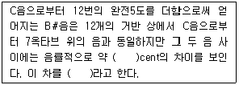
- 22, 신토닉 콤마
- 22, 피타고라스 콤마
- 24, 신토닉 콤마
- 24, 피타고라스 콤마
(정답률: 54%)
22. 음악회장에서의 잔향시간에 대한 설명으로 가장 옳은 것은?
- 잔향시간이 길면 길수록 음악적으로 좋은 음향이라 할 수 있다.
- 잔향시간은 실내 공간 1000m3기준으로 1.5~2초가 이상적이라고 할 수 있다.
- 주파수가 높을수록, 공간 잔향이 길수록 이상적이라고 할 수 있다.
- 큰 연주회장에서는 잔향이 짧을수록 이상적이다.
(정답률: 58%)
23. 음속이 340m/s에 가장 가까운 온도는?
- 0℃
- 10℃
- 14℃
- 20℃
(정답률: 57%)
24. 다음 중 일정한 음의 강도에서 사람이 가장 잘 들을 수 있는 주파수는 몇 Hz인가?
- 30Hz
- 300Hz
- 3000Hz
- 30000Hz
(정답률: 69%)
25. 디뒤머스 콤마의 수치로 옳은 것은?
- 9/8
- 10/9
- 81/80
- 256/243
(정답률: 48%)
26. 순정률에서 장7도의 음정비를 옳게 나타낸 것은?
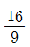
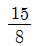
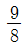
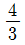
(정답률: 60%)
27. 소리의 파장이 3cm 이고, 음속이 340m/s일 때 주파수는 약 몇 Hz인가?
- 약 11333Hz
- 약 1133Hz
- 약 113Hz
- 약 0.0088Hz
(정답률: 32%)
28. 공진주파수를 구하는 식으로 옳은 것은? (단, 막대의 길이 L, Young율 Y, 밀도 ρ0, 장력 T, 정수 n이라 한다.)
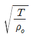
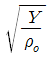
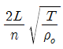
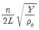
(정답률: 40%)
29. 움직이는 음원이 관찰자 쪽으로 다가와 다시 멀어져 가는 동안 진동수가 높게 들리다가 낮아지는 현상을 무엇이라 하는가?
- 매스킹 효과
- 간섭 효과
- 음폐 효과
- 도플러 효과
(정답률: 58%)
30. 음의 크기가 최저 가청한계값보다 음강도 레벨이 증가할 때 소리를 감지할 수 있는 상태 또는 최저 가청한계보다 증가한 dB의 값을 무엇이라 하는가?
- 매스킹효과(masking effect)
- 등감곡선
- 청력손실(hearing loss)
- 가청한계
(정답률: 44%)
31. 피타고라스 음률의 반음 림마(limma)를 구하는 방법으로 옳은 것은?
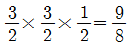
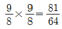
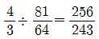
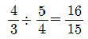
(정답률: 44%)
32. 피타고라스 음률에서 림마(limma)는 무엇인가?
- 8도와 피타고라스 장7도의 차
- 순정 장3도와 피타고라스 장3도의 차
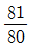
의 진동수비- 순정 5도와 평균율 5도의 차
(정답률: 44%)
33. 피치가 80cent 내려간 피아노를 조율할 때 다음 중 가장 적합한 방법은?
- 440Hz로 한 번에 조율한다.
- 440Hz로 반드시 두 번 조율한다.
- 1차조율은 표준피치보다 10~20센트 높여서 하고, 2차 조율은 정상 피치조율을 한다.
- 표준피치보다 10~20센트 낮춰서 1, 2차 조율한다.
(정답률: 54%)
34. C40번 261.626Hz에서 두 옥타브 위의 C64번의 진동수는?
- 523.25Hz
- 784.87Hz
- 1046.50Hz
- 1308.13Hz
(정답률: 40%)
35. F#34와 A#38의 진동에서 맥놀이(b/s)수를 구하는 방법으로 옳은 것은?
- 195.9977Hz : 246.9417Hz = 2 : 3
- 195.9977Hz : 261.6256Hz = 3 : 4
- 184.9977Hz : 233.0819Hz = 4 : 5
- 207.6523Hz : 174.6141Hz = 3 : 4
(정답률: 40%)
36. 다음 중 해머 타현시 현과 해머의 가장 적절한 각도는?
- 약 100°
- 약 95°
- 약 90°
- 약 80°
(정답률: 36%)
37. 업라이트 피아노의 센터레일에 부착되어 있지 않은 것은?
- 위펜
- 버트
- 댐퍼레버
- 댐퍼 스톱레일
(정답률: 44%)
38. 건반 깊이가 전체적으로 깊을 때 알맞은 조정 방법은?
- 프론트 핀의 종이 펀칭을 모두 뺀다.
- 프론트 펀칭 밑에 종이펀칭을 알맞게 고인다.
- 발란스 핀의 종이 펀칭을 모두 고인다.
- 발란스 레일 밑의 종이를 알맞게 고인다.
(정답률: 43%)
39. 백 건반 전면과 열쇠봉과의 간격은 몇 mm가 가장 적합 한가?
- 약 2mm
- 약 4mm
- 약 6mm
- 약 8mm
(정답률: 60%)
40. 해머의 사진행 조정 후 해야 할 작업이 아닌 것은?
- 해머의 각도를 확인한다.
- 백첵과 캐쳐의 간격을 조정한다.
- 해머의 현맞춤을 확인한다.
- 캡스턴을 조정한다.
(정답률: 60%)
3과목: 임의 구분
41. 부러진 아그라프를 교활할 때의 설명으로 틀린 것은?
- 새 아그라프를 끼울 때는 현 방향을 맞추기 위해 풀어서 높이와 각도를 맞춘다.
- 부러진 아그라프를 뺄 때는 실리콘 원액을 나사부분에 넣으면 효과적으로 뺄 수 있다.
- 새 아그라프를 끼울 때 현 구멍의 각은 브리지핀 방향으로 수평이어야 한다.
- 아그라프 현 구멍의 높이는 와셔로 조절한다.
(정답률: 25%)
42. 건반에서 잡음이 나튼 경우에 해당되지 않는 것은?
- 프로트 핀이 휘어져 있는 경우
- 흑건 프론트 부싱이 옆으로 빠져나와 있는 경우
- 건반 납이 느슨하게 박혀있는 경우
- 백건 아크릴 접착이 떨어져 있는 경우
(정답률: 36%)
43. 건반에서 발생하는 잡음으로 볼 수 없는 것은?
- 캡스턴 버튼과 위펜 휠과의 마찰
- 밸런스 핀과 건반 부상과의 마찰
- 건반 몸체의 미세한 쪼개짐
- 버트 팰트가 떨어짐
(정답률: 50%)
44. 애프터 터치의 양이 부족한 원인이 아닌 것은?
- 타현거리가 너무 멀 때
- 건반 깊이가 너무 얕을 때
- 캡스턴 조정에 로스트 모션이 많을 때
- 댐퍼스푼 조정량이 많을 때
(정답률: 57%)
45. 피아노를 연주하던 중 심하게 타현력이 약하고 건반은 눌러졌는데 해머가 현을 때리지 못하는 경우는 어느 부분이 고장 난 경우인가?
- 건반의 밸런스핀 홀 부러짐
- 댐퍼거리가 좁음
- 벡첵 와이어와 브라이들 테이프 와이어의 접촉
- 댐퍼 스프링의 강도 약화
(정답률: 34%)
46. 브라이들 테이프에 관한 설명으로 틀린 것은?
- 액션을 분리해 잭과 버트의 간격이 약 2~5mm가 되도록 브라이들 와이어를 조정한다.
- 브라이들 테이프 조정은 연타를 위해 매우 중요하다.
- 브라이들 테이프와 백첵 와이어의 간격은 1.5~2mm 정도를 유지한다.
- 브라이들 와이어 조정은 일반적으로 해머스톱 이후 조정한다.
(정답률: 38%)
47. 타현거리 조정 작업에 대한 설명으로 옳지 않은 것은?
- 해머레일 연결쇠의 나사를 풀어서 해머레일을 움직여서 조정한다.
- 업라이트 피아노일 경우 타현거리는 45~48mm정도이다.
- 타현거리가 멀어져 있을 경우에는 해머레일 언더 쿠션 펠트를 빼내어 맞춘다.
- 중음부분의 타현거리만 멀어져 있을 경우 해머레일과 레일클로스 사이에 펠트를 끼워 준다.
(정답률: 22%)
48. 키 이저(Key easer)의 사용 용도를 가장 옳게 나타낸 것은?
- 건반을 높일 때
- 건반 깊이를 조정할 때
- 프론트 부싱(front bushing)을 넓힐 때
- 밸런스(balance) 구멍을 넓힐 때
(정답률: 30%)
49. 해머 생크가 온도와 습도의 불균형으로 인하여 옆으로 돌아가 다른 현을 때릴 때 가장 적합한 조정 방법은?
- 돌아간 쪽 반대쪽 플랜지 밑에 종이를 고인다.
- 돌아간 쪽 플랜지 밑에 종이를 고인다.
- 생크를 가열하여 바로 잡아준다.
- 현을 해머에 맞게 이동시킨다.
(정답률: 57%)
50. 피아노의 공명에 의하여 잡음이 생긴다. 이 때 주위에서 가장 많이 잡음이 날 수 있는 요인은?
- 벽시계, 유리창 및 전등
- 피아노 위에 있는 옷
- 피아노 위에 있는 책
- 지갑, 손수건 및 모자
(정답률: 69%)
51. 약음페달의 운동량을 조절해 주는 것은?
- 나비너트
- 페달볼트
- 턴버클
- 약음 연결쇠
(정답률: 32%)
52. 건반 수평고르기를 하는 가장 주된 이유는?
- 건반 무게가 달라지기 때문이다.
- 균일한 터치를 만드는데 필요하기 때문이다.
- 건반이 고르지 않으면 건반이 휘어지기 때문이다.
- 건반 수평고르기를 해야 해머가 작동하기 때문이다.
(정답률: 69%)
53. 레규레이팅 버튼 스크류에 녹이 생겨 부러졌을 때 수리방법으로 옳은 것은?
- 부러진 버튼을 접착제로 붙인다.
- 부러진 스크류를 도려 내고 굵은 스크류로 교체한다.
- 부러진 스트류 주위를 가는 드릴로 뚫어 도려 낸 다음 나무로 메우고 새로운 스크류로 교체한다.
- 부러린 스크류 주위에 구멍을 크게 뚫어 도려 낸 다음 금속 재질을 끼우고 새로운 스크류로 교체한다.
(정답률: 43%)
54. 페달 기구 수리에 관한 사항 중 옳지 않은 것은?
- 페달 밑에 쿠션 펠트를 붙일 때에는 페달 운동 거리를 감안하여 적당한 두께로 붙인다.
- 폐달봉이 프레임에 닿아 잡음이 날 경우에는 페달봉이 약간 휘고 프레임에 펠트를 붙인다.
- 페달이 토대목 옆면에 닿아 잡음이 날 경우에는 토대목 옆면을 갈아 주거나 클로스나 스킨 등을 붙이고 흑연을 칠해 준다.
- 페달 스프링에서 잡음이 날 경우에는 스프링을 교체하거나 접착제를 칠한다.
(정답률: 44%)
55. 캐처 스킨이 마모되어 그 기능이 약할 때에 수리 방법은?
- 가죽 위에 펠트을 덧붙인다.
- 가죽 위에 얇은 가죽을 덧붙인다.
- 송곳으로 찔러 미끄러지지 않게 한다.
- 깨끗이 제거하고 새가죽을 붙여야 한다.
(정답률: 36%)
56. 피아노 액션에서 잡음이 나는 경우가 아닌 것은?
- 플랜지가 헐거워졌을 때
- 버트펠트가 마모되었을 때
- 위펜 클로스가 마모되었을 때
- 댐퍼 펠트가 너무 부드러울 때
(정답률: 67%)
57. 핀판에 대한 설명으로 틀린 것은?
- 단단한 나무를 사용한다.
- 재료는 고로쇠, 나도박 등 나무 결이 치밀한 것을 사용한다.
- 폭은 18cm 내외이고, 두께는 6cm정도이다.
- 핀판은 핀보다 6~8mm 정도 가는 드릴로 구멍을 뚫는다.
(정답률: 27%)
58. 타현시 해머 헤드의 펠트가 마모되어 타현점이 깊이 파여 있는 것을 수리하는 방법으로 옳은 것은?
- 예리한 칼로 깎아 계란형(타원형)으로 만든다.
- 크기가 같은 다른 해머와 교체해야 한다.
- 샌드 페이퍼를 사용하여 계란형으로 파일링한다.
- 다른 해머 헤드의 부분을 알맞게 잘라서 접착한다.
(정답률: 59%)
59. 업라이트 피아노에서 해머의 반복 타현에 영향을 주지 않는 부품은?
- 브라이들 테이프
- 댐퍼레버 스프링
- 위펜
- 버트 스프링
(정답률: 58%)
60. 이중권선을 감을 때에 대한 설명으로 옳은 것은?
- 안쪽의 동선이 감긴 방향과 같은 방향으로 바깥동선을 감는다.
- 안쪽의 동선이 감긴 방향과 반대 방향으로 바깥동선을 감는다.
- 동선의 길이는 안쪽 동선이 길고 바깥쪽동선이 짧다.
- 안쪽 동선과 바깥쪽 동선의 길이는 같다.
(정답률: 40%)
피아노선은 일반적으로 1부터 88까지 번호가 매겨져 있습니다. 이 중에서 1번부터 7번까지는 굵기가 증가하면서 음이 낮아지는 소리를 내고, 8번부터 88번까지는 굵기가 감소하면서 음이 높아집니다.
따라서, 13번은 0.825mm의 굵기를 가진 소리를 내는 피아노선이며, 19번은 1.000mm의 굵기를 가진 소리를 내는 피아노선입니다.
그리고 ""는 16번 피아노선으로, 굵기가 1.200mm입니다. 이것이 정답인 이유는 문제에서 "가장 옳게 나타낸 것"이라는 조건이 있기 때문입니다. 따라서, 다른 보기들은 틀린 것이고, ""가 가장 옳게 나타낸 것입니다.